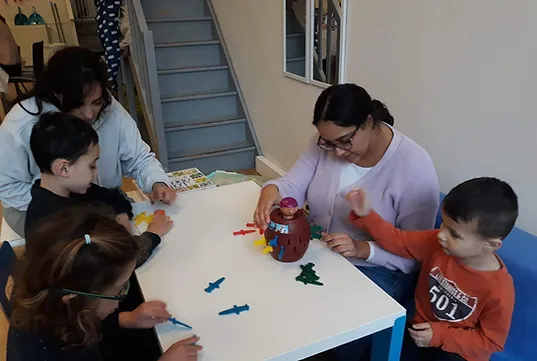

Présentation de l'association
La fondation et les missions
L'association Le Cœur Bleu a été fondée le 11 mai 2017 par Cathia Garguir, psychologue ABA de profession. Face à la réalité que rencontrent les multiples familles avec qui elle travaille, Cathia Garguir décide alors de se lancer dans un combat de grande envergure, motivé par les objectifs suivants :
La prise en charge du handicap en France, une prise de conscience
Actuellement, la grande majorité des prises en charge proposées aux personnes avec autisme en France ne sont pas adaptées et ne suivent pas les recommandations de la Haute Autorité de Santé (HAS). Elles ne proposent, par exemple, presque pas de travail individualisé et les équipes ne sont que peu, voire pas formées aux approches recommandées par la HAS.
Il existe cependant quelques centres formés à l’ABA (Camus à Villeneuve d'Ascq et le service Teddimôme à Villeneuve d'Ascq pour le Nord Pas de Calais), mais il n’y a pas assez de places pour toutes les personnes avec autisme en ayant besoin (environ 30 pour ces 2 structures confondues).
Du fait du manque de places en structure, les familles font donc généralement appel à des professionnels libéraux. Un problème se pose alors : l'ABA n'étant toujours pas prise en charge par la sécurité sociale, comment financer cette solution? La Maison Départementale de Personnes Handicapées (MDPH) permet cela, mais de manière largement insuffisante. Ainsi les familles obtiennent souvent une aide sous la forme de l'Allocation d'Education de l'Enfant Handicapé (AEEH) qui est comprise, avec les compléments 2 ou 3, entre 394,42€ et 504,21€ par mois. Certaines familles, plus rares, obtiennent la Prestation de Compensation du Handicap (PCH) qui permet de recevoir une aide financière plus conséquente. Mais encore une fois, elles se retrouvent en difficultés car l'emploi d'un psychologue n'est pris en charge par cette subvention qu'à hauteur de 100€ par mois.
Cette situation semble cependant improbable car une prise en charge libérale complète en ABA revient environ à 3300€ par mois (comprenant l'emploi d'un psychologue et d'un éducateur). A l'inverse, une prise en charge en structure (dont la plupart ne suivent pas ou peu les recommandations de l'HAS) revient à 700€ par JOUR en hôpital de jour (source : Autisme France, 2013 ) et à, en moyenne, 4500€ par mois en IME, IEM, etc. (source : rapport de l'ARS en 2012). Cette incohérence donne place à de nombreux cas de familles d'enfants porteurs d'autisme dits "sans solution" dus à l'impossibilité de financer de tels aménagements.
Objectif N°1 : Soutenir le respect du droit à l'éducation en aidant les familles à obtenir les aides nécessaires à la mise en place d'une prise en charge adaptée aux besoins des enfants